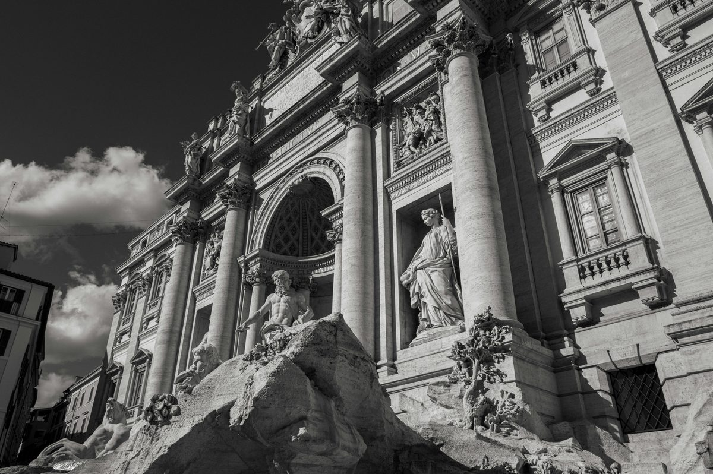

Day 2 — Imperial Rome Golf Cart Tour + Trastevere
Friday, May 22, 2026

💡 TOUR HIGHLIGHTS — what to ask the driver to include
PLACES & MAP LINKS — tap any place to open in Google Maps
🚗 Tour pickup — 10:30 AM — 📍 Aleph Rome Hotel (tour pickup point)
GetYourGuide golf cart tour. Ref: GYG32L64VBWN. 3 hours, fully customizable route.
🍴 Lunch — ~1:30 PM — 📍 Lunch near tour drop-off (Monti area)
Tour likely ends near Colosseum/Monti area. Plenty of trattorias for a casual walk-in lunch. Driver can recommend.
🍴 Dinner — 8:30 PM — 📍 Checco er Carrettiere
Via Benedetta 10, Trastevere. Reserved. Take taxi from Aleph (~15 min).
SIDE QUESTS
⚡ 📍 Quartiere Coppedè — hidden Art Nouveau neighborhood (Rob & Maddison only)
Tiny fairytale-architecture quarter most tourists never find. Stained glass, chimera fountains, frog statues, painted facades. Real local discovery during the afternoon rest. Parents stay at Aleph.
⚡ 📍 Antico Caffè Greco (Rob & Maddison only — or parents can join later)
Rome's oldest café (1760). Goethe, Keats, Casanova all sat here. Red velvet, marble, oil paintings. Worth a cappuccino at the counter just to be in the room. Parents stay at Aleph during rest — or join if they want a coffee out.
CONTACTS
GetYourGuide booking ref: GYG32L64VBWN PIN 4PTax=5Y
Checco er Carrettiere phone: +39 06 580 0985
NOTES
- Golf cart tour solves accessibility — Dad rides comfortably, no long pushes through Vatican area.
- Confirm wheelchair fits in the golf cart when driver arrives at Aleph.
- After the tour, lunch wherever the cart drops you (near Colosseum / Monti area).
- Long rest at Aleph in the afternoon before Trastevere dinner.
- Taxi from Aleph to Trastevere ~15-20 min, Checco can call a taxi back.